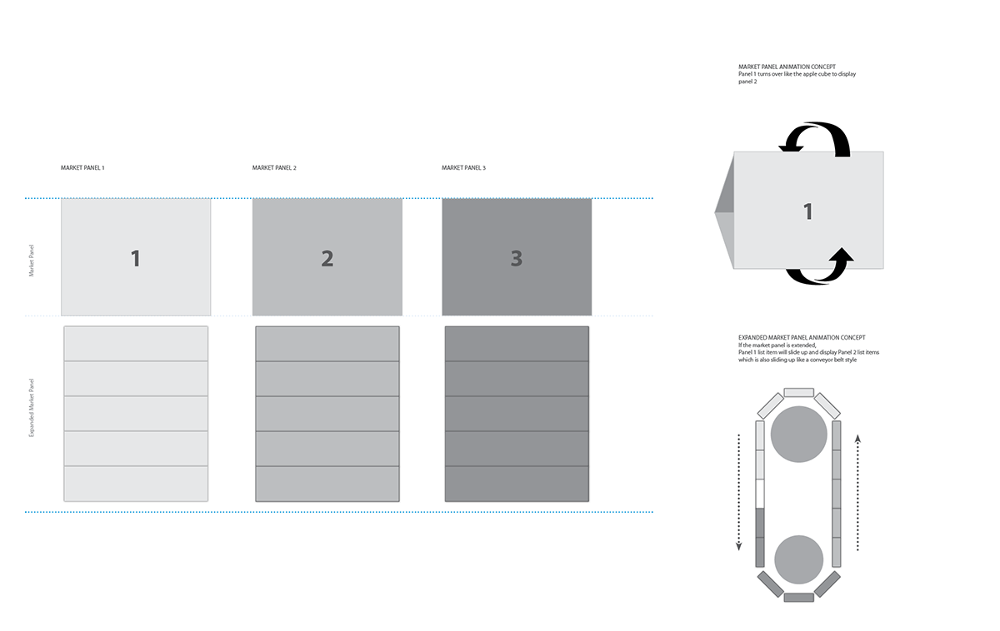

- Date: March 2013
- Roles: Engage, Analyze, Design
- Tools: Adobe InDesign, Adobe PDF, Rally (Agile Development)

" iPad App "
Still seen as the definitive resource for business and stock related information, CNBC needed to revolutionize their digital assets to stay ahead of the curve, maintain, and growth their customer base amidst all the new players. The challenge for the team was a redesign that to showcase CNBC as a forward thinking company who understood the needs of the business news consumer, and was aware of the behavioral shift in the use of mobile devices. Some important things we had to consider to improve on the current app:
It was critical to conduct stakeholder interviews and do a full assessment of the current app and user behavior. This reach data would prove invaluable in shaping an application’s road-map, and supporting a truly user-center design.
Ultimately the team was focused on providing a robust solution that would work seamless with the back-end architecture, and allowed for a simple, sexy and modern interface.
We created an experience that delivered a customizable interface based on user's preference. Three different levels of users (beginners, intermediate, and expert) would opt to display content matching their comfort levels. The novice user could maintain a more simplistic and streamlined experience while a more experienced users could choose to display more granular content. A video play would be front and centered with controls for minimizing to the background while maintaining the audio.
All the value features of the desktop experience were maintained but buried intuitive to prevent clutter and messy interface.
With a 4.5 star rating in the App store, the response from current and new users was a direct indication of the success of the redesign and December 2013 product launch. The iPad redesign significantly influenced the redesign of the iPhone and Apple Watch apps.